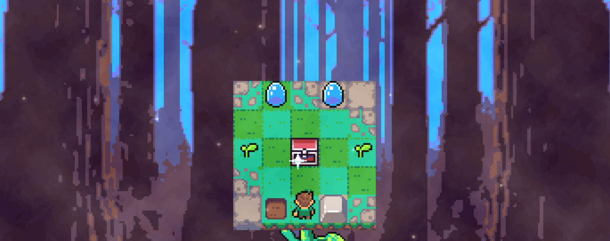
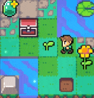
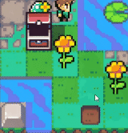
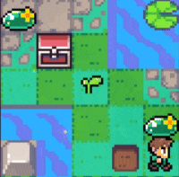
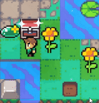

I. Basic Game Knowledge
1. Game Overview
Nymble 2 is a turn-based puzzle platformer where you control a
small character navigating miniature worlds. Each level requires
precise jumps and timing to avoid dangers and collect items.
2. Controls
The game uses simple controls: tap or click to jump. Timing is
crucial as the game operates in turns — you jump, then enemies and
elements react.

II. Game Scenario and Quests
1. Exploring the Environment
Nymble 2 is a turn-based puzzle platformer where every move and
jump is crucial. You navigate through intricate miniature levels,
using wisdom to deal with cute monsters, mechanisms, and various
dangers.
-
Observation: Each scene hides clues and items.
Careful exploration helps you discover what you need to unlock
puzzles.
-
Listen to Sounds and Watch for Light: Some
puzzles are linked to audio cues and lighting changes. Stay
alert to the environment for subtle hints.
-
Game Elements:
-
Sprouts: Jumping over small sprouts makes
the flowers bloom and earns points.

-
Water Droplets (Monsters): These are
monsters; jumping over them makes the droplets disappear.

-
Treasure Chests: Jumping over treasure
chests allows you to obtain the treasures inside.

-
Land Piece: Jumping over this piece of land
grants access to the cloud ladder for the next level, but it
must be jumped over at the end of the level. Jumping over it
earlier will have no effect.

Goal: Find the seed, plant it in the soil, then
climb the bean stalk to reach the next stage. This progression is
the core of each level.
Worlds & Levels: Nymble 2 features over 100
handcrafted mini-levels spread across 7 vibrant worlds, all
presented in bright pixel-art style.
Important: Pay attention to the water droplet
monsters' actions with every move, as they act immediately after
your jump. If you jump next to them, they will attack you.
2. Level Progression
-
Turn-Based Mechanics: Each jump is a turn. Plan
your moves carefully as enemies react after your action.
-
Completing Levels: Reach the cloud ladder at
the end by interacting with the land piece and climbing the bean
stalk to progress.
-
Star Rating: Each level can award up to three
stars. Collect blooming flowers and defeat enemies to earn the
best rating.
-
Special Challenges: Some levels are unique Boss
stages with roguelike-style dungeons and turn-based boss battles
that test your planning.
V. Conclusion
We hope this guide helps you explore Nymble 2 with more
confidence. Stay patient, stay curious, and share your discoveries
with other players to improve together.
Game link:
Nymble 2 on itch.io